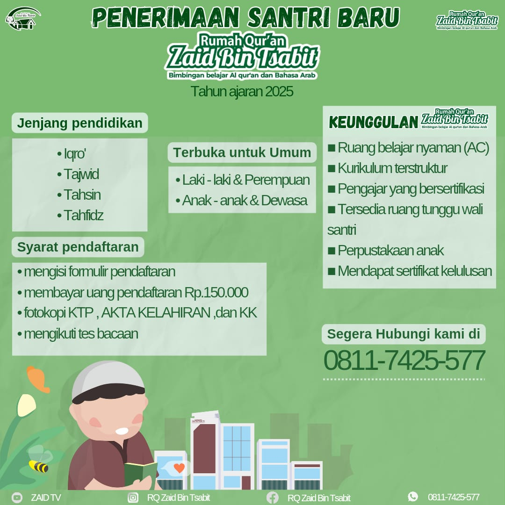

Rumah Qur'an Zaid bin Tsabit Jambi
Menerima Santri Baru
Periode: April - Mei 2025
Waktu Pendaftaran:
Dimulai: 10 April 2025
Setiap Hari (Senin-Jumat) Ba'da Ashar s.d Adzan Isya
Syarat Pendaftaran:
- Sehat jasmani dan rohani
- Usia 6 - 70 tahun
- Terbuka untuk semua gender dan usia
- Mengisi formulir pendaftaran
- Melampirkan dokumen yang dibutuhkan
- Mengikuti tes baca Al-Qur'an
- Memiliki buku pembelajaran metode Asy-Syafi'i
- Berkomitmen belajar secara berkelanjutan
Kompetensi:
- IQRO': Pengenalan dasar-dasar bacaan
- TAJWID: Perbaikan bacaan dan hukum-hukum Tajwid
- TAHSIN: Perbaikan makhraj huruf dan waqaf
- TALAQQI: Pembiasaan bacaan Al-Qur'an
- TAHFIDZ: Menghafal Al-Qur'an sesuai Tajwid
Biaya:
Pendaftaran: Rp. 150.000,-
Syahriyah (SPP):
- Rp. 75.000
- Rp. 100.000
- Rp. 150.000
- Atau dengan nominal lain
Full Beasiswa bagi Anak Yatim & Dhuafa